Django Web framework. Запросы и их выполнение.
Задача 1. Создание объектов
Задание:
Напишите запрос на создание 6-7 новых автовладельцев и 5-6 автомобилей, каждому автовладельцу назначьте удостоверение и от 1 до 3 автомобилей. Задание можете выполнить либо в интерактивном режиме интерпретатора, либо в отдельном python-файле. Результатом должны стать запросы и отображение созданных объектов.
Ход работы:
Заходим в Python Console в панели управления PyCharm, затем импортируем в консоль все необходимые модели через
from first-project-app.models import *
После этого создаем новых владельцев и автомобили через create:
car6 = Car.objects.create(registration_number="NOP123", make="Audi", model="Q7", color="Silver")
owner6 = CarOwner.objects.create(first_name="Kanye", last_name="West", date_of_birth=datetime(1988, 6, 25))
IDCard.objects.create(car_owner=owner3, license_number="SS11223", license_type="C", issue_date=datetime(2016, 7, 20))
Результат:
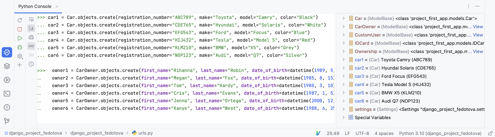
Далее для предотвращения возможных ошибок регистрируем владельцев как userов и назначаем им удостоверения:user6 = User.objects.create(username="kanye_west", password="password123")
owner6 = CarOwner.objects.create(
user=user6,
first_name="Kanye",
last_name="West",
date_of_birth=make_aware(datetime(1988, 6, 25), timezone)
)
# Назначаем удостоверение
id_card6 = IDCard.objects.create(
car_owner=owner6,
license_number="KW19880625",
license_type="Standard",
issue_date=make_aware(datetime(2019, 11, 1), timezone)
)
Наконец назначаем 1-3 автомобиля каждому пользователю:
Ownership.objects.create(car_owner=owner6, car=car2, start_date=make_aware(datetime(2023, 9, 1), timezone))
Ownership.objects.create(car_owner=owner6, car=car3, start_date=make_aware(datetime(2023, 10, 1), timezone))
Задача 2. Создание простых запросов
Задание: По созданным в пр.1 данным написать следующие запросы на фильтрацию.Где это необходимо, добавьте related_name к полям модели: * Выведете все машины марки “Toyota” (или любой другой марки, которая у вас есть) * Найти всех водителей с именем “Олег” (или любым другим именем на ваше усмотрение) * Взяв любого случайного владельца получить его id, и по этому id получить экземпляр удостоверения в виде объекта модели (можно в 2 запроса) * Вывести всех владельцев красных машин (или любого другого цвета, который у вас присутствует) * Найти всех владельцев, чей год владения машиной начинается с 2010 (или любой другой год, который присутствует у вас в базе)
Ход работы: 1. Выводим все машины марки тесла:
tesla_cars = Car.objects.filter(make="Tesla")
print(tesla_cars)
Результат:
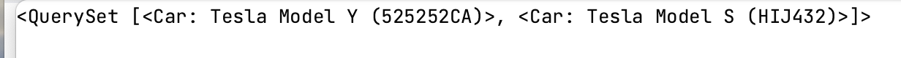
2. Все водители с именем Rayan:rayan_owners = CarOwner.objects.filter(first_name="Rayan")
print(rayan_owners)
Результат:
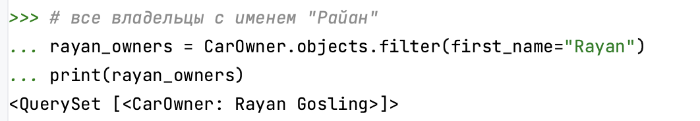
3. Получаем удостоверение по id владельцаowner = CarOwner.objects.first()
owner_id = owner.id
# Используем id для получения удостоверения:
owner_id_card = IDCard.objects.get(car_owner_id=owner_id)
print(owner_id_card)
Результат:
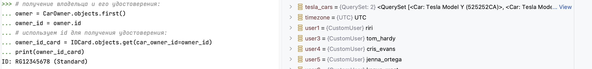
4. Все владельцы красных машин:red_cars_owners = CarOwner.objects.filter(cars__color="Red")
print(red_cars_owners)
Результат:
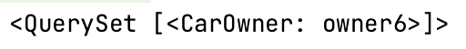
5. Владельцы с годом владения 2023:owners_2023 = CarOwner.objects.filter(ownership__start_date__year=2023)
print(owners_2023)
Результат:
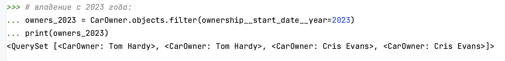
Задача 3. Агрегация и аннотация запросов
Задание: Необходимо реализовать следующие запросы c применением описанных методов: * Вывод даты выдачи самого старшего водительского удостоверения * Укажите самую позднюю дату владения машиной, имеющую какую-то из существующих моделей в вашей базе * Выведите количество машин для каждого водителя * Подсчитайте количество машин каждой марки * Отсортируйте всех автовладельцев по дате выдачи удостоверения (Примечание: чтобы не выводить несколько раз одни и те же таблицы воспользуйтесь методом .distinct()
Ход работы: 1. Самое старое водительское удостоверение:
from django.db.models import Min
oldest_id_card = IDCard.objects.aggregate(Min('issue_date'))
# Извлекаем дату из результата
oldest_date = oldest_id_card['issue_date__min']
formatted_date = oldest_date.strftime('%d-%m-%Y') if oldest_date else None
print(formatted_date)
Результат:
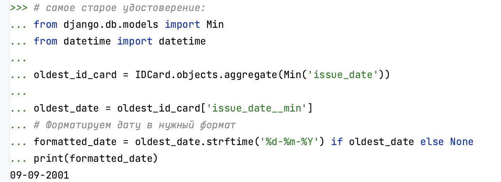
2. Самая поздняя дата владения машиной:from django.db.models import Max
latest_ownership = Ownership.objects.aggregate(Max('end_date'))
# Извлекаем дату из результата
latest_date = latest_ownership['end_date__max']
formatted_date = latest_date.strftime('%d-%m-%Y') if latest_date else None
print(formatted_date)
Результат:
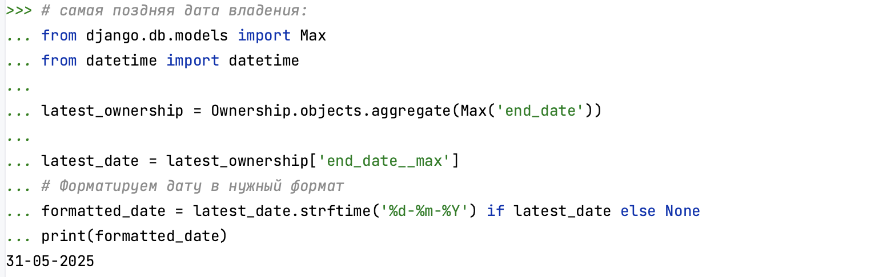
3. Количество машин для каждого владельца:from django.db.models import Count
owners_car_count = CarOwner.objects.values('id', 'first_name', 'last_name')\
.annotate(car_count=Count('cars')).order_by('-car_count')
for owner in owners_car_count:
print(owner)
Результат:
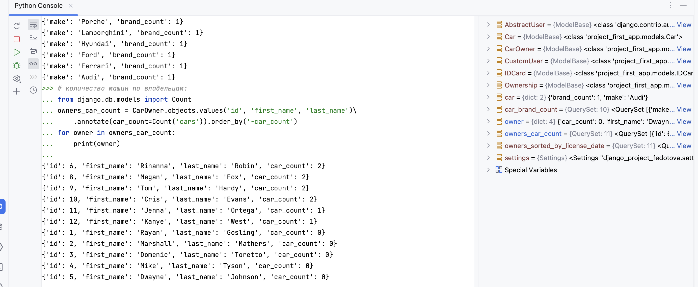
4. Кол-во машин каждой марки:car_brand_count = Car.objects.values('make')\
.annotate(brand_count=Count('make')).order_by('-brand_count')
for car in car_brand_count:
print(car)
Результат:
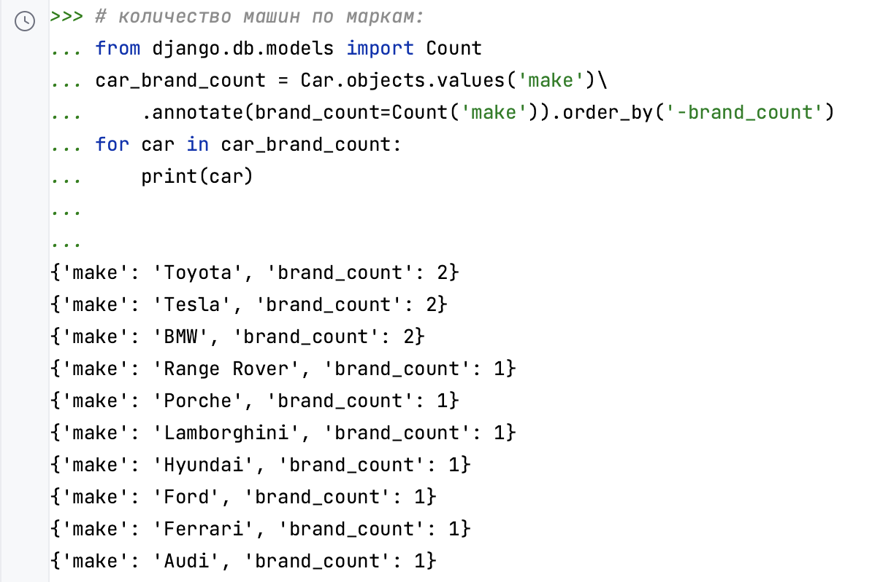
5. Владельцы по дате выдачи удостоверения:from django.db.models import Min
owners_sorted_by_license_date = CarOwner.objects.annotate(
earliest_license_date=Min('idcard__issue_date')
).order_by('earliest_license_date')
for owner in owners_sorted_by_license_date:
print(owner.first_name, owner.last_name, owner.earliest_license_date)
Результат:
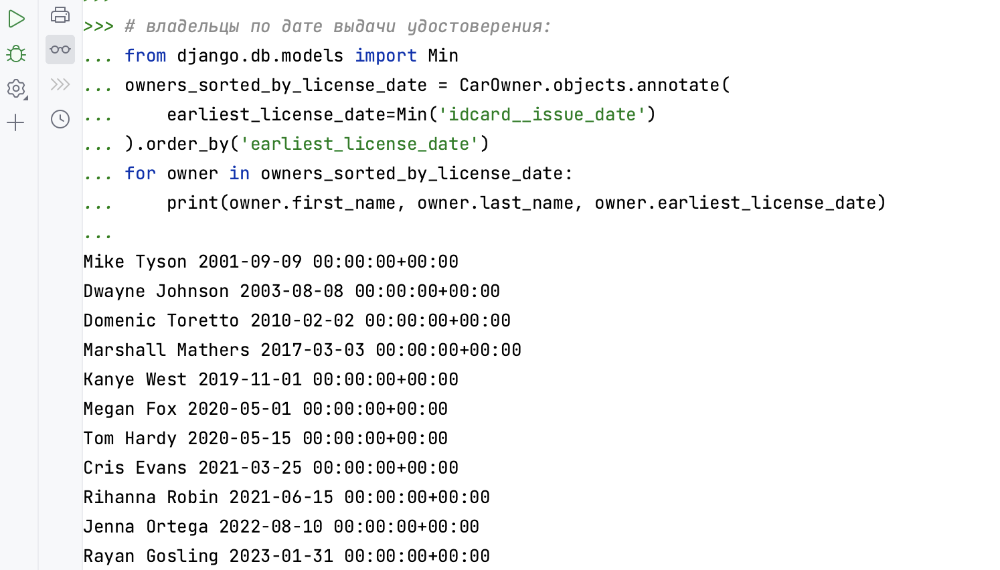